The game ends abruptly at 1am (see 8A72), even if Willy has collected all
the items, or has reached his bed and is already on his way to the toilet, or
already has his head down the toilet.
This fact seems to contradict the message that scrolls across the lower part of
the title screen (see 8454), which implies that Willy must collect all the
items before midnight.
Tunes
The tune played on the title screen is Beethoven's Moonlight Sonata. The
tune played during gameplay is If I Were a Rich Man from the musical
Fiddler on the Roof.
The moving bed
The bed in Master Bedroom is actually a conveyor moving left to right,
but it doesn't appear to move because the first and third bytes of the conveyor
tile (shown below) are 0x55 (01010101), which remains 0x55 after being rotated
left or right twice.
When Willy loses a life, the pitch of the notes in the in-game music decreases,
and their length increases; see 8B54.
To prevent this from happening:
POKE 35674,126
Taking a BREAK
The game quits if BREAK - that is, CAPS SHIFT and SPACE - is pressed (see
8AB1). This works at any time, including when Willy is running to the toilet
or already has his head down it.
WRITETYPER
If you take Willy to the floor at the bottom of the staircase in First
Landing and type the word WRITETYPER, a cheat mode is activated that enables
Willy to teleport to any room (see 8B9F).
For example, to teleport to Master Bedroom, hold down keys '1', '2'
and '6', and then press '9' to activate the teleporter. For a list of all the
rooms and their teleport codes, see the Rooms page.
As you were
Willy's animation frame at 85D2 and direction flag at 85D0 are not
initialised before the game starts, so his animation frame and the direction
he's facing at the start of a game will be whatever they were when he died in
the previous game. (The first time the game starts, Willy's animation frame is
0 and he's facing right.)
White-seeking missile
The routine at 91BE, when drawing an arrow, kills Willy if the arrow hits
anything with white INK; this means, for example, that Willy would be killed if
the arrow hits a white rope. It is no coincidence, then, that in the rooms that
have both a rope and an arrow (We must perform a Quirkafleeg,
On the Roof and The Beach), the rope is not white.
To see Willy die when the arrow hits the rope in The Beach:
There are several places in Willy's mansion where it is obvious that he is in
danger of falling from a great height and entering an infinite death loop.
However, there are also some places where it is far from obvious that merely
moving from one room to another will lead to an infinite death loop.
There are 61 room definitions occupying pages 0xC0-0xFC, but the definition
for room 0x2F in page 0xEF is not used. Room 0x2F is completely empty
and can only be accessed by activating cheat mode and using
the teleport code '123469'.
However, the (inaccessible) right exit from Tree Root is set to
0x2F (see EEEA), which suggests that there was an intention to
place room 0x2F there at some point during the game's development.
Unused grid location
The routine at 86C3, which is responsible for randomly selecting one of the
180 grid locations on the code sheet by its index (0x00-0xB3), never selects
index 0xB3 (R9); as a result, the code at grid location R9 is never asked for,
even though it's present on the code sheet (it's 2423).
To give the code at grid location R9 a chance of being asked for:
The commonest codes on the code sheet are 2411 (at H7, O7, R7 and C9) and 3443
(at O3, D6, L8 and R8).
Codes from code
The codes for grid locations A0-Q9 are derived not from a deliberately crafted
data table but from the unused code remnants at 9E00.
The one-way saw
The saw guardian in Cuckoo's Nest always has its blade facing left,
even when it's moving left to right (see A378). The reason for this is that
its base sprite is 0 and its animation frame mask is 011, which means it cycles
through sprites 0, 1, 2 and 3 only (see 9211).
Use the following POKE to make the saw face right when moving in that
direction:
All the other saw guardians in the game have the blade facing right when moving
in that direction, because their animation frame mask is 111 (see A1A0,
A1A8 and A2C0).
The disrespectful monk
Like the one-way saw in Cuckoo's Nest, the monk in
The Chapel always faces left, even when he's moving left to right.
Also like the one-way saw, the reason for this is that his base sprite is 0 and
his animation frame mask is 011, which means he cycles through sprites 0, 1, 2
and 3 only.
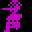
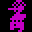
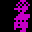
Use the following POKE to make the monk face right when walking in that
direction:
The saw in Cuckoo's Nest and the monk in The Chapel are the only horizontal
guardians that use only 4 out of 8 possible animation frames in a particular
room.
Some air left?
The message at 8451 ('AIR') may be unused, but it is still a poignant
reminder of Willy's former career as a miner.
Maria's dodgy depth perception
Whether Maria raises her arm at Willy in Master Bedroom depends on his
height above floor level, as opposed to his distance away from her (see the
code at 9550); this means that she raises her arm not only as Willy walks up
the ramp towards her, but also if he jumps in the air at the entrance to the
room.
Rope climbing for beginners
In order to climb down a rope, Willy must move in the same direction as the
rope is swinging (left if the rope is swinging right to left, right if the rope
is swinging left to right); to climb up a rope, he must move in the opposite
direction (see 937C).
The encroaching rope
In the entity buffer at 8100, the definition for a rope uses the second and
fourth bytes of the following definition (in addition to the eight bytes of its
own slot). This means that to avoid corrupting another entity, the rope must be
followed in the room's list of entity definitions either by an arrow (which
doesn't use the second and fourth bytes of its slot), or by nothing.
Note, however, that if a rope were the eighth entity specified in a room, byte
11 of its buffer would occupy the third byte in the otherwise unused area at
8141, and would not be reinitialised by the routine at 8912 after Willy
has lost a life. This means that if Willy dies while on the rope, bit 0 of byte
11 (which indicates whether he is on the rope) remains set; then, if Willy
starts moving in the same direction as the rope is swinging, he will teleport
into the room above. This happens because:
The section of code at 935E erroneously assumes that Willy is on the rope, and updates the rope status indicator at 85D6 from 0 (Willy is not on the rope) to 1 (Willy is on the rope, with the centre of his sprite anchored at segment 1).
On the next pass through the main loop, the section of code at 92B6 erroneously detects Willy on the rope at segment 1, and accordingly sets his pixel y-coordinate at 85CF to 246; this is the y-coordinate of segment 1 of the rope (6) minus 16.
On the next pass through the main loop, the code at 89D1 picks up Willy's pixel y-coordinate (now 246) from 85CF, finds that it is 225 or greater, and moves Willy into the room above.
Ropes before arrows
The rope-drawing code at 92A4 places Willy on the rope if it is touching
anything else (Willy or otherwise) that's already been drawn. This means, for
example, that if an arrow is drawn before the rope (by appearing before it in
the room's entity specifications), Willy will be immediately transported onto
the rope when the arrow hits it.
When a room is initialised - upon Willy dying or entering a room - the item
count and clock are briefly reset to '000' and '00:00 m' respectively by
the routine at 8912 before being restored by the section of code at 8A31
in the main loop.
It is the only type of guardian that can be seen moving vertically in one room
and horizontally in another.
Double descent
There is a maximum distance that Willy can fall before the landing will kill
him, but it's possible for Willy to fall a greater distance than that if his
descent is punctuated by a transition from one room into the room below; if
each portion of his descent on either side of the transition is less than the
maximum distance, he will land safely.
To demonstrate this, jump left near the bottom of the ramp in
Conservatory Roof - Willy will land safely on the ramp in the room
below (Orangery). But if Willy jumps left off the ramp in Orangery,
he will die when he lands on a lower part of the ramp.
The code responsible for this is at 94E3 - it resets the airborne status
indicator at 85D1 to 2 if it's currently 10 or less.
High jump
At certain points on a ramp, Willy can jump higher than the normal 20 pixels
above his starting point. Depending on where he is standing on the ramp, he
will jump 20, 22, 24 or 26 pixels.
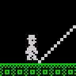
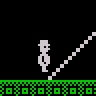
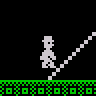
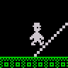
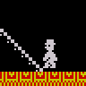
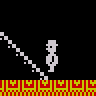
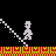
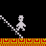
26 pixels
24 pixels
22 pixels
20 pixels
When the jump key is pressed while Willy is standing on a ramp, he is drawn at
the pixel y-coordinate Y, where Y is his original pixel y-coordinate rounded
down to the nearest multiple of 8 (see 95C8, which ignores the ramp below
Willy when the airborne status indicator at 85D1 is 1, and enters 9637
with B=0). So before the jumping animation even starts, Willy is already up
to 6 pixels above the ramp itself.
Also, during a jump Willy rises and then falls until his pixel y-coordinate is
Y again, and if the jump key is still being pressed, he will jump from that
point instead of falling all the way back to the ramp first.
Guardian colours
The most common guardian colour is yellow (25 instances), and the least common
colour is blue (2 instances, both BRIGHT, in The Forgotten Abbey and
The Attic).
As for the other colours, there are 18 red guardians, 20 magenta guardians, 19
green guardians, 18 cyan guardians, and 7 white guardians; there are no black
guardians anywhere.
Guardians need a clear path
The guardian-drawing code at 91D6 kills Willy if a guardian collides with
anything that's already been drawn in the room. This means, for example, that
Willy is killed if a guardian hits a nasty, a wall or the floor.
See this happen by placing a wall block in the path of the guardian in
The Bathroom:
In addition, if an arrow appears before a guardian in a room's list of entity
specifications, Willy will be killed if the arrow hits the guardian. See this
happen by replacing the first guardian in Top Landing with an arrow:
Entity 0x59, defined at A2C8, and appearing in The Hall and
West Wing, is the only guardian that does not move up, down, left or
right.
However, the minimum and maximum pixel y-coordinates for this guardian are
defined as 40 and 56 respectively, which suggests that it did move up and down
at some point during the development of the game.
Note also that if it weren't for a bug in how conveyors are drawn (see
Corrupted conveyors), the conveyor in The Wine Cellar would be
unanimated as well.
Unanimated guardians
There are a few vertical guardians that have only one animation frame, and so
are in a sense unanimated (though they do still move up and down).
In contrast, every horizontal guardian has either 4 or 8 animation frames.
Underanimated guardians
Though the game engine can manage a vertical guardian with eight frames of
animation, there are no such guardians in the game: no vertical guardian uses
more than four animation frames. This means that in byte 0 of a vertical
guardian's buffer - bits 5-7 of which hold the animation frame index - bit 7 is
always unused in practice.
Unused entity definition
Entity definition 0x2B at A158 contains data but is not used.
Which room might this vertical guardian have inhabited at some point while the
game was being developed? We'll probably never know.
Untouchable entity definition
Entity definition 0x7F at A3F8 should not be modified or used to define an
actual entity, because its first byte (0xFF) is used to terminate the entity
buffer at 8100.
Ramps v. walls
Wall tiles usually block Willy's path, but if he's on a ramp, he can sometimes
walk straight through them. This can be seen when Willy walks down the ramp in
On top of the house.
Willy can also walk through a wall tile while going up a ramp. There are no
opportunities for him to perform this feat in the original game, but the
following POKE adds a wall tile near the ramp in The Bathroom to
illustrate the phenomenon:
POKE 57682,128
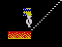
One item behind another
There are two items in The Beach, but they are both at the same
location, so it looks as if there is only one.
If an item lies in the path of an arrow or white guardian, it will be collected
when the arrow or guardian hits it. This is because the routine at 93D1
collects an item if the cell it occupies has white INK.
To replace the guardian in The Bathroom with an arrow and watch it
collect the item (make sure Willy jumps as the arrow approaches):
In addition, any item situated in a room that has a background with white INK
will be automatically collected as soon as Willy enters the room (see
The self-collecting item).
The uneconomical underworld
The demonic face guardian (as seen in Entrance to Hades, The
Chapel and Priests' Hole) uses three entity definitions
(0x10, 0x11 and 0x12), but it could be adjusted to
use only two, where the upper-left and upper-right portions share an entity
definition with a different base sprite and x-coordinate.
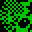
Use the following POKEs to free up entity definition 0x10:
In The Chapel and Halfway up the East Wall, the ramps act as
conveyors that push Willy down the slope, because the ramp tile has the same
attribute byte as the conveyor tile (which is not actually used in either
room). There are no conveyor-ramps anywhere else in the game.
Floor ramps
There are five rooms in which the floor tiles behave like ramps because their
attribute byte matches that of the (unused) ramp tile:
If the in-game music has been switched off, the game will pause automatically
after a period of inactivity; however, if the in-game music is playing, it will
not (see 8B3C).
Cheats never cycle colours
While the game is paused, the INK and PAPER colours are cycled at regular
intervals, unless the WRITETYPER cheat mode has been
activated (see 8AE1).
Nomen Luni?
The name of the room Nomen Luni is a pun on 'Nomen Ludi', a Latin
translation of 'The Name of the Game', which appeared in adverts for the
aeroplane shoot-em-up game
Zzoom by
Imagine Software Ltd.
In Nomen Luni and the room below (Under the Roof) you can see
an aeroplane that has crashed into the roof of Willy's mansion:
We must perform a Quirkafleeg?
The name of the room We must perform a Quirkafleeg is a reference to
issue 5 of the comic book The Adventures of Fat Freddy's Cat, in which
the inhabitants of Pootweet, upon seeing a suitcase full of dead mice, exclaim
'We must perform a Quirkafleeg!' and promptly lie down on their backs and
start waving their arms and legs in the air.
The name of the room Dr Jones will never believe this may be a
reference to the 'Myth of Jones', a story told by the philosopher Wilfrid
Sellars in his most famous paper, Empiricism and the Philosophy of Mind.
In this story, the hero, Jones, seeks to explain how a person can have a
sensation of something that doesn't exist; for example, how it can be that
people behave just as they would if there were a pink elephant in the room when
in fact there is no such thing there. In this particular room, however, there
is a pink (well, magenta) elephant.
The emptiest rooms
Back Door is the only room that has no items, nasties, rope, arrows or
guardians.
The Front Door is the only other room that has no rope, arrows or
guardians; it also has no nasties, but does contain an item.
The most guardians
The Forgotten Abbey is the only room with a full complement of eight
guardians.
The Attic is the only other room with eight entities defined: six
vertical guardians and two arrows.


 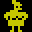
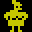